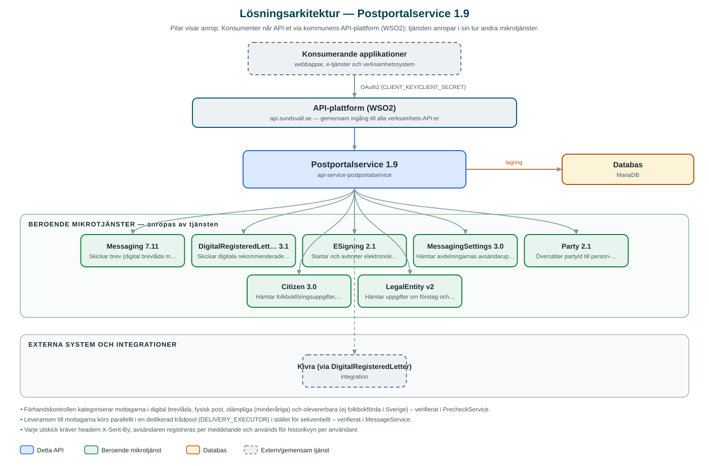

Postportalservice
Backend för kommunens postportal – handläggare skickar brev, rekommenderade brev, sms och signeringsförfrågningar till invånare och företag, med automatiskt kanalval och uppföljning.
Om API:et
Postportalservice är tjänsten bakom kommunens postportal, där handläggare skickar utskick till invånare och företag utan att själva behöva veta vilken kanal som fungerar för varje mottagare. Tjänsten stödjer vanliga brev (digital brevlåda med automatisk reservväg till fysisk post via Messaging), digitala rekommenderade brev via Kivra, sms samt dokument som ska signeras elektroniskt.
Före utskick kan portalen göra en förhandskontroll (precheck) av mottagarlistan: tjänsten översätter partyId till person- eller organisationsnummer, hämtar folkbokföringsuppgifter och avgör per mottagare om leveransen kan ske digitalt eller som fysisk post. Minderåriga och personer som inte är folkbokförda i Sverige sorteras ut som olämpliga respektive olevererbara mottagare. Mottagarlistor kan även läsas in från CSV-filer, både för brev och sms.
Vilka avdelningar som får skicka, och med vilka avsändaruppgifter, styrs av MessagingSettings-tjänsten. Varje utskick registreras per användare och avdelning, vilket ger historik per handläggare samt statistik per avdelning. För signeringsärenden tar tjänsten emot statushändelser från e-signeringstjänsten och tillhandahåller signerade dokument, signeringsinformation och kvitton.
Det här gör API:et
- Brev med automatiskt kanalval – Brev levereras till digital brevlåda när mottagaren kan nås digitalt och skickas annars som fysisk post, via Messaging-tjänsten.
- Digitala rekommenderade brev – Rekommenderade brev skickas via Kivra genom DigitalRegisteredLetter-tjänsten, med signeringsinformation och kvitto.
- Sms-utskick – Sms till enskilda mottagare eller massutskick via CSV-fil med validering av telefonnummer.
- Elektronisk signering – Dokument skickas för signering via e-signeringstjänsten; statushändelser tas emot och signerat dokument kan hämtas.
- Förhandskontroll av mottagare – Precheck avgör per mottagare om leverans kan ske digitalt eller per post, och sorterar ut minderåriga och personer utan svensk folkbokföring.
- Historik och statistik – Utskick registreras per användare och avdelning, med meddelandehistorik per handläggare och statistik per avdelning.
API-dokumentation
API:ets samtliga resurser, parametrar och datamodeller finns beskrivna i en OpenAPI-specifikation som är hämtad ur källkodsförrådet. Den kan utforskas interaktivt i Swagger UI eller laddas ner som YAML. Programvaruförteckningen (SBOM) listar tjänstens samtliga tredjepartskomponenter med version och licens.
Teknisk dokumentation
Nedan beskrivs hur tjänsten är uppbyggd, vilka andra tjänster den anropar och vad som krävs för att driftsätta den. Informationen är härledd ur källkoden och dess konfiguration på GitHub.
Arkitektur

API:et är en mikrotjänst (Java 25, Spring Boot via kommunens gemensamma tjänsteplattform dept44 (8.0.8), byggd med Maven). Konsumenter når tjänsten via kommunens gemensamma API-plattform (WSO2) på api.sundsvall.se – tjänsten anropas aldrig direkt. Tjänsten anropar i sin tur andra mikrotjänster i kommunens tjänstelandskap. Lagring: MariaDB med Flyway-migrationer; utskick, mottagare, bilagor, signeringsärenden, användare och avdelningar lagras här. Övriga integrationer som förekommer i koden: Kivra (via DigitalRegisteredLetter).
Teknikstack
- Språk: Java 25
- Ramverk: Spring Boot via kommunens gemensamma tjänsteplattform dept44 (8.0.8), byggd med Maven
- Databas: MariaDB med Flyway-migrationer; utskick, mottagare, bilagor, signeringsärenden, användare och avdelningar lagras här
- Övrigt: Dedikerad trådpool (deliveryExecutor) för parallell leverans till många mottagare
Beroenden till andra mikrotjänster
Tjänsten anropar följande mikrotjänster. Versionerna är hämtade ur källkodens integrationsklienter.
| Tjänst | Version | Användning |
|---|---|---|
| Messaging | 7.11 | Skickar brev (digital brevlåda med reservväg till fysisk post) och sms. |
| DigitalRegisteredLetter | 3.1 | Skickar digitala rekommenderade brev via Kivra och hämtar signeringsinformation och kvitton. |
| ESigning | 2.1 | Startar och avbryter elektroniska signeringsärenden för uppladdade dokument. |
| MessagingSettings | 3.0 | Hämtar avdelningarnas avsändaruppgifter och inställningar, t.ex. sms-avsändare och leveransmetod för fysisk post. |
| Party | 2.1 | Översätter partyId till person- eller organisationsnummer. |
| Citizen | 3.0 | Hämtar folkbokföringsuppgifter, bland annat adresser och ålder, för förhandskontrollen. |
| LegalEntity | v2 | Hämtar uppgifter om företag och organisationer vid förhandskontroll av organisationsmottagare. |
Programvaruförteckning
Tjänsten bygger på 260 tredjepartskomponenter fördelade på 14 olika licenser. Till skillnad från tabellen ovan, som listar andra mikrotjänster, avses här de programbibliotek som ingår i bygget. Se programvaruförteckningen för hela listan.
Konfiguration och driftsättning
- application.yml med URL och OAuth2-klientuppgifter för Messaging, DigitalRegisteredLetter, ESigning, MessagingSettings, Party, Citizen och LegalEntity
- MariaDB-anslutning; databasschemat versionshanteras med Flyway
- Trådpool för leverans konfigureras separat (antal trådar och köstorlek)
- Anropande handläggare identifieras via headern X-Sent-By (dept44 Identifier), som valideras och lagras per utskick
- Anrop görs per kommun – municipalityId ingår i alla API-vägar
Noterbart ur källkoden
- Förhandskontrollen kategoriserar mottagarna i digital brevlåda, fysisk post, olämpliga (minderåriga) och olevererbara (ej folkbokförda i Sverige) – verifierat i PrecheckService.
- Leveransen till mottagarna körs parallellt i en dedikerad trådpool (DELIVERY_EXECUTOR) i stället för sekventiellt – verifierat i MessageService.
- Varje utskick kräver headern X-Sent-By; avsändaren registreras per meddelande och används för historikvyn per användare.
- Statushändelser för signeringsärenden tas emot via en callback-endpoint (POST /events/{messageId}) från e-signeringstjänsten och uppdaterar ärendets status till exempelvis SIGNED eller CANCELLED.
Källkod
Källkoden är öppen och finns hos Sundsvalls kommun på GitHub. I källkodsförrådet finns även instruktioner för att klona, konfigurera och starta tjänsten i egen miljö.